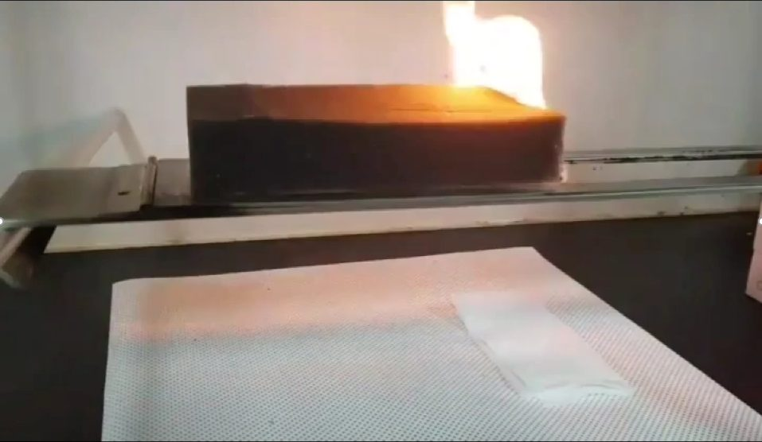
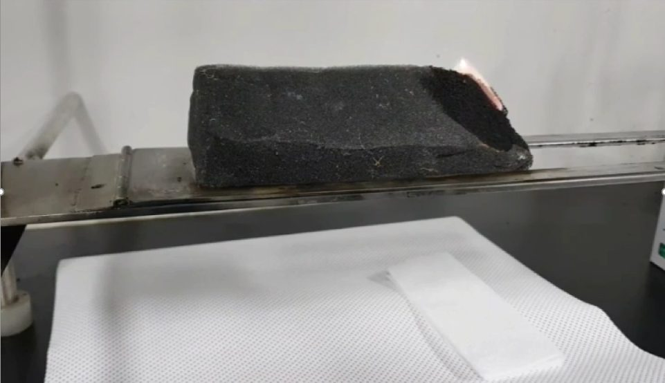

바이오 · 환경 진단용 센서
생체분자와 나노구조체의 선택적 반응을 이용해 바이오 진단 및 환경 유해물질을 고감도로 검지하는 센서 소재·플랫폼입니다.
- 바이오 진단
- 환경 유해물질 검지
- 현장 진단
성균관대학교 실험실 창업 · 딥테크 소재 기업
(주)뉴클레오엑스는 성균관대학교 바이오-나노 소재 연구실(BNML)의 원천기술을 기반으로 설립된 딥테크 소재 기업입니다. 생물 유래 분자 ATP로 만든 친환경 바이오 난연소재를 주력 사업으로, 자동차·배터리·산업용 소재에 적용을 넓히고 있습니다.
회사 소개
뉴클레오엑스는 ‘생물 유래 물질의 신개념 소재로서의 확장’이라는 한 가지 명제에서 출발했습니다.
성균관대학교 바이오-나노 소재 연구실(Biological & Nanoscale Materials Lab)에서 축적한 연구를 바탕으로 실험실 창업을 통해 설립된 딥테크 기업입니다. 생명체의 생존에 핵심적인 역할을 하는 생물 유래 분자를 산업 소재로 전환하는 공정과 설계 원리를 보유하고 있습니다.
바이오-나노 융합 소재와 미래 지향형 친환경 소재를 통해 인류의 지속가능성에 기여합니다. ESG가 산업의 표준이 되어가는 흐름 속에서, 인간과 환경을 먼저 생각하는 소재 기업을 만들어 갑니다.
핵심 기술
뉴클레오엑스의 주력 사업은 ATP 기반 친환경 바이오 난연소재입니다. 자동차·배터리·산업용 소재로 적용을 넓히고, 같은 분자 설계 원리를 진단 센서와 기능성 복합소재로 확장해 나갑니다.

주력 사업
생물 유래 분자 ATP를 활용해 난연에 필요한 인(P)·질소(N)·탄소를 한 분자에 담아낸 할로겐-프리 난연소재입니다. 브롬·염소계 난연제를 대체하면서 자연 소화 특성과 유독가스 저감을 함께 확보합니다.
확장 파이프라인
난연소재에서 검증한 분자 설계 원리를 다음 소재군으로 확장해 개발합니다.
생체분자와 나노구조체의 선택적 반응을 이용해 바이오 진단 및 환경 유해물질을 고감도로 검지하는 센서 소재·플랫폼입니다.
생물 유래 나노구조체를 고분자 매트리스와 결합해 기계적 물성과 기능성을 동시에 높인 미래 지향형 복합소재입니다.
ATP 플랫폼
ATP(아데노신 삼인산)는 체내 에너지 전달 분자이지만, 동시에 난연에 필요한 인·질소·탄소를 모두 품고 있습니다. 뉴클레오엑스는 이 분자를 단일 원료로 사용해 ‘올인원(all-in-one)’ 친환경 난연소재를 세계 최초로 보고했고, 관련 원천특허를 보유하고 있습니다.

차별성
소재는 한 번 채택되면 오래 쓰입니다. 그래서 우리는 원천기술, 검증 데이터, 사업화 역량을 함께 갖춘 파트너가 되어야 한다고 믿습니다.
ATP 기반 난연 원천특허와 분자 설계 기술을 보유합니다. 원료부터 공정까지 직접 통제합니다.
할로겐 프리 소재로 강화되는 환경규제와 ESG 요구에 선제적으로 대응합니다.
성균관대 바이오-나노 소재 연구실(BNML)의 축적된 연구와 국제 학술지 성과에 기반합니다.
딥테크 팁스 선정과 기관 투자 유치, 벤처기업 인증과 창업보육센터 입주를 바탕으로 연구를 제품으로 연결합니다.
연혁 · 인증
단일 생체분자로 난연성을 구현한 ‘올인원’ 소재를 학계에 처음 보고했습니다.
성균관대학교 실험실 창업으로 출발, 소재 사업화를 위한 법인을 설립했습니다.
벤처투자조합 등 기관 투자를 유치하고, 중소벤처기업부 딥테크 팁스 과제에 선정되어 난연소재 사업화와 후속 소재 개발을 함께 추진하고 있습니다.
기술성과 사업성을 인정받아 벤처기업 인증을 획득했습니다. 성균관대 창업보육센터 입주기업으로 사업화를 이어갑니다.
중소벤처기업부 Deep-Tech TIPS 과제 선정 (2025)
벤처투자조합 등 기관 투자 유치 (2025)
2026년 벤처기업확인 심의 통과
교내창업 기업 입주기업
난연성 관련 원천기술 특허 보유
바이오-나노 소재 연구실 기반
CEO 인사
“생명체의 생존 원리를 소재로 옮기는 일, 그것이 우리가 산업에 제안하는 방식입니다.”
뉴클레오엑스는 성균관대학교 바이오-나노 소재 연구실에서 개발된 기술을 기반으로 실험실 창업을 통해 설립한 스타트업입니다.
생명체의 생존에 핵심적인 역할을 하는 생물 유래 물질을 활용해 만든 혁신적인 바이오-나노 융합 소재와 미래 지향형 친환경 소재로 인류의 발전에 기여하고자 합니다.
ESG가 갈수록 중요해지는 세계적 추세에 따라, 인간과 환경을 항상 먼저 생각하는 회사를 만들어 가겠습니다.

이정헌
(주)뉴클레오엑스 대표이사 · 성균관대학교 신소재공학부 교수
문의
소재 공급, 공동 개발, 투자 및 기술 이전에 관한 문의를 환영합니다. 확인 후 회신드립니다.
경기 수원시 장안구 서부로 2066, 성균관대학교 산학협력센터 85212호 (천천동)
성균관대학교 자연과학캠퍼스 · 산학협력센터 85212호